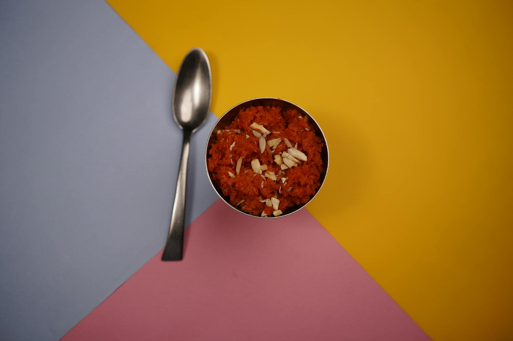

Gajar Ka Halwa

🥕 Gajar Ka Halwa (Traditional Indian Carrot Pudding) 🌰
Gajar Ka Halwa is a classic Indian dessert, a rich and comforting pudding
made from grated carrots slow-cooked in milk, sweetened with sugar, and
enriched with ghee (clarified butter) and aromatic cardamom. It's
traditionally garnished with slivered nuts like almonds and pistachios,
making it a beloved treat, especially during the winter months and festive
occasions.
Ingredients List
- 1kg fresh carrots, grated
- 1 liter full-fat milk (or whole milk)
- 1/2 cup granulated sugar (adjust to taste)
- 1/4 cup ghee (clarified butter)
- 1/2 tsp cardamom powder
-
1/4 cup mixed nuts (almonds, cashews, pistachios), slivered or chopped
- A pinch of saffron strands (optional, for color and flavor)
Steps to Make
-
Cook the Carrots and Milk: Combine grated carrots and
milk in a heavy-bottomed pan. Bring to a boil, then simmer on low heat.
-
Reduce the Milk: Continue simmering and stirring until
the milk has almost completely evaporated and the carrots are tender
(approx. 40-60 minutes).
-
Add Ghee and Sugar: Stir in the ghee and cook for 5-10
minutes. Then add the sugar and mix thoroughly.
-
Sauté and Thicken: Continue to cook on medium-low heat,
stirring constantly, until the liquid evaporates and the halwa thickens
to a moist, pudding-like consistency.
-
Add Flavor and Nuts: Stir in the cardamom powder,
saffron (if using), and most of the chopped nuts.
-
Garnish and Serve: Transfer to a serving bowl. Garnish
with the remaining slivered nuts and serve warm or chilled.
Home